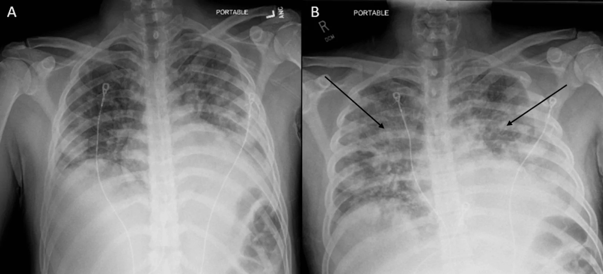
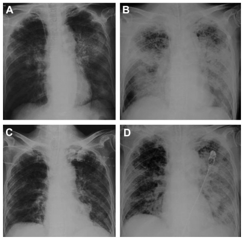
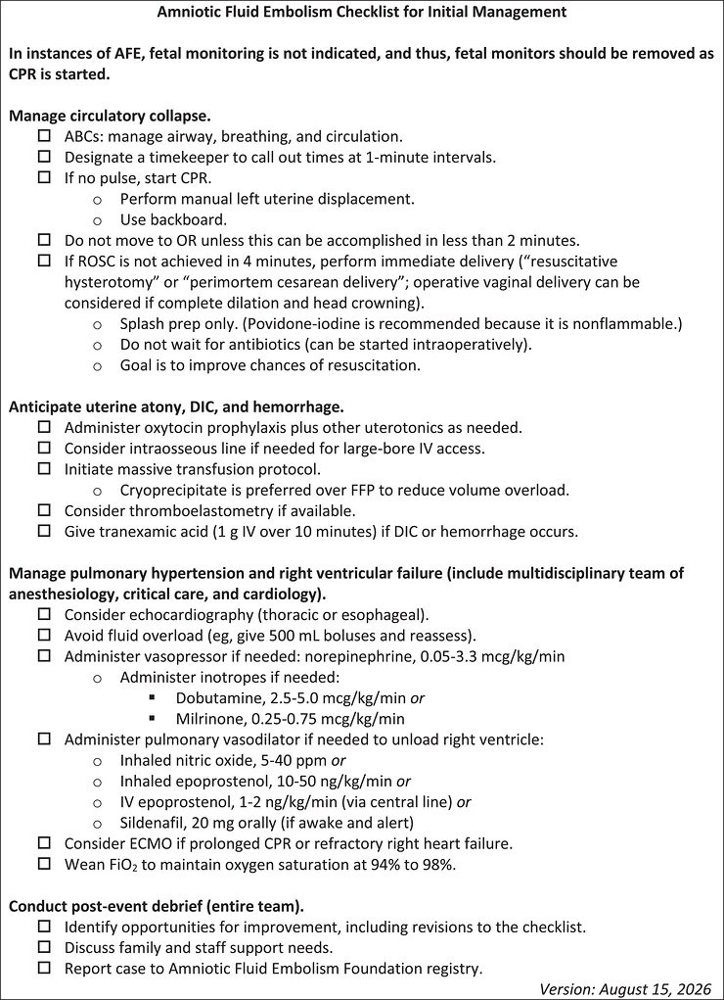

1958 — Phù phổi cấp sau truyền máu ở sản phụ: TACO – TRALI – AFE trên cùng một phim / Transfusion-associated circulatory overload vs TRALI vs amniotic fluid embolism
Tags: pattern:phu-phoi pattern:mo-phoi-hai-ben pattern:phu-phoi-thuy-tinh pattern:phu-phoi-ton-thuong pattern:soc vung:phoi vung:tu-cung-phan-phu protocol:Xquang-nguc protocol:CT-nguc protocol:sieu-am-tim protocol:BNP
Mức chắc chắn (certainty): tổng hợp y văn (literature synthesis) — dịch tễ phản ứng truyền máu từ cơ sở dữ liệu ISTARE (132,8 triệu đơn vị máu, PMID 27658188); tỉ lệ TACO từ tổng quan phạm vi ICU (PMID 30882480) và vai trò BNP/NT-proBNP từ tổng quan hệ thống biomarker (PMID 30488959); nguy cơ sau sinh từ thuần tập 517.854 sản phụ Thụy Điển (PMID 31366586); AFE từ thuần tập UKOSS 120 ca (PMID 25683758) và checklist SMFM 2026 (PMC13565333). Ca minh hoạ: PMC13521321 (CC BY 4.0) và PMC3177594 (CC BY-NC). Nhóm không có bệnh nhân của mình.
Câu chốt: cùng một phim mờ phổi hai bên sau truyền máu, ba bệnh có ba cơ chế khác nhau và ba điều trị ngược nhau: TACO = quá tải thể tích (thủy tĩnh) → lợi tiểu; TRALI = tổn thương mao mạch do kháng thể người cho (tăng thấm) → hỗ trợ thông khí, KHÔNG lợi tiểu; AFE = sốc phản vệ–đông máu nội mạch → CPR + sản khoa + máu. Ba câu hỏi: (1) khởi phát trong 6 giờ sau truyền? (2) tim có to và bệnh nhân đáp ứng lợi tiểu? (3) có tụt huyết áp + rối loạn đông máu đột ngột quanh sinh? Sai lầm chết người: gọi TRALI là TACO → lợi tiểu + truyền thêm dịch (hoặc ngược lại: gọi TACO là TRALI → truyền dịch) — cả hai đều làm nặng phù phổi.
1. Tổng quan bệnh học – cơ chế hình ảnh (TẠI SAO)
1.1 Vì sao sản phụ là nhóm dễ bị nhất
- Truyền máu sau sinh rất phổ biến: tới 3% sản phụ nhận máu sau sinh; trong thuần tập 517.854 ca sinh, 12.183 (2,4%) được truyền (PMID 31366586).
- Phản ứng truyền máu sau sinh cao gấp đôi: 79/10.000 ca truyền ở sản phụ vs 40/10.000 ở phụ nữ không mang thai, OR 2,0 (95% CI 1,6–2,5); tiền sản giật là yếu tố nguy cơ mạnh nhất, OR 2,1 (1,7–2,6) (PMID 31366586).
- Nền sinh lý giải thích: thể tích huyết tương tăng 40–50% nhưng áp lực keo huyết tương giảm → ngưỡng phù phổi thủy tĩnh thấp hơn; tiền sản giật thêm rò mao mạch + giảm albumin + tăng sức cản mạch hệ thống → cùng một lượng dịch gây phù nhanh hơn ở người không mang thai.
- Ước lượng mất máu bằng mắt thấp hơn thực tế tới 40% (PMID 36075527) → vừa dễ truyền thiếu, vừa dễ bù quá — chính là cái bẫy dẫn tới TACO.
1.2 Gánh nặng: TACO và TRALI là hai nguyên nhân tử vong hàng đầu
- ISTARE (25 quốc gia, 132,8 triệu đơn vị máu): phản ứng bất lợi 77,5/100.000 đơn vị; tử vong 0,26/100.000; trong 349 ca tử vong, 58% do ba phản ứng hô hấp: TACO 27%, TRALI 19%, khó thở sau truyền 12% (PMID 27658188).
- TACO là phản ứng truyền máu nặng thường gặp nhất, tỉ lệ ≈ 1% người lớn được truyền; ở ICU gộp 5,5% (95% CI 2,6–9,4%) (PMID 30882480) — và chính vì "chỉ là quá tải dịch" nên hay bị bỏ qua.
- AFE (để phân biệt): 1,7/100.000 ca sinh, tử vong 0,3/100.000, tử vong ca bệnh 19%, 7% sống sót có di chứng thần kinh vĩnh viễn (UKOSS 2005–2014, PMID 25683758).
1.3 TẠI SAO TACO gây mờ phổi kiểu "thủy tĩnh"
- Truyền nhanh/khối lượng lớn + suy tim–thận + tiền sản giật → tăng áp lực mao mạch phổi → dịch lọc ra khoang phế nang (transudate).
- Trên X-quang: mờ hai bên, ưu thế trung tâm ("cánh dơi"), bóng tim to, bờ mạch phổi rộng, tràn dịch màng phổi hai bên, dày kẽ quanh phế quản. Vì là dịch toàn thân, dấu hiệu đi kèm là tăng cân, phù ngoại biên, tĩnh mạch cổ nổi, tăng huyết áp.
- Vì sao BNP tăng: căng thành thất do tăng thể tích → phóng thích peptide lợi niệu → NT-proBNP sau/sau trước > 1,5 hỗ trợ TACO; BNP sau truyền < 300 pg/mL hoặc NT-proBNP < 2.000 pg/mL (trong 24 giờ) làm TACO khó xảy ra (PMID 30488959). Lưu ý: giá trị kém đặc hiệu ở bệnh nặng.
1.4 TẠI SAO TRALI gây mờ phổi kiểu "tăng thấm" mà tim KHÔNG to
- Mô hình hai tác động (two-hit): (1) bệnh nhân có bạch cầu bị "mồi" sẵn (nhiễm trùng, phẫu thuật, sinh, chấn thương); (2) kháng thể kháng HLA/kháng bạch cầu của người cho (hoặc lipid hoạt tính sinh học trong chế phẩm) → hoạt hoá bạch cầu trong mao mạch phổi → tổn thương nội mô → dịch giàu protein (exudate) vào phế nang.
- Vì là tổn thương mao mạch, không phải quá tải: tim bình thường, không tràn dịch nhiều, BNP không tăng, KHÔNG đáp ứng lợi tiểu, và bệnh nhân có thể sốt, tụt huyết áp.
- Tiêu chuẩn: khởi phát trong 6 giờ sau truyền; giảm oxy máu theo Berlin (PaO₂/FiO₂ ≤ 300 hoặc SpO₂ < 90% khí trời); mờ hai bên không giải thích trọn bởi quá tải/tăng áp; không có bằng chứng quá tải tuần hoàn; loại trừ tổn thương phổi khác. Phân type I (không có yếu tố nguy cơ ARDS) và type II (có yếu tố nguy cơ ARDS/tổn thương phổi sẵn có) (PMID 31282773).
- Phòng ngừa đã chứng minh: chiến lược huyết tương ưu thế người cho NAM (loại trừ người cho nữ có tiền sử thai) làm giảm TRALI (PMID 31282773, PMID 25514705).
1.5 TẠI SAO AFE trông giống cả hai nhưng là bệnh thứ ba
- AFE xảy ra trong chuyển dạ hoặc ≤ 30 phút sau sinh, cơ chế giống phản vệ + hoạt hoá bổ thể + tăng tiêu sợi huyết → sụp tuần hoàn–hô hấp + DIC, không phải "quá tải" và không phải "kháng thể truyền máu".
- Không có xét nghiệm chốt — chẩn đoán loại trừ; CTA không thấy khuyết thuốc (dùng để loại PE). Chi tiết chẩn đoán – xử trí ở bài 1956.
- Điểm khác biệt cốt lõi với TACO/TRALI: tụt huyết áp nặng + rối loạn đông máu, và xảy ra quanh sinh, không nhất thiết sau truyền máu.
2. Mẫu hình + chẩn đoán phân biệt (gamut)
- Mẫu hình mẹ: mờ phổi hai bên mới xuất hiện trong 6 giờ quanh một lần truyền máu ở sản phụ.
- Gamut theo cơ chế:
- Quá tải thể tích: TACO, suy tim cấp mất bù, hẹp van hai lá, bệnh thận giai đoạn cuối, truyền dịch/tinh thể quá nhiều trong băng huyết.
- Tăng thấm mao mạch: TRALI, ARDS do nhiễm trùng/hít sặc, viêm phổi, phù phổi do tiền sản giật, phản vệ.
- Thuyên tắc/nội mạch: AFE, thuyên tắc phổi, thuyên tắc ối thể không điển hình, thuyên tắc khí.
- Khác: phản ứng tan máu cấp, nhiễm khuẩn do chế phẩm, TRIM (transfusion-related immune modulation)/khó thở sau truyền (TAD), tràn khí, xẹp phổi.
- Trục phân biệt thực dụng: (a) tim có to không — (b) BNP có tăng không — (c) có đáp ứng lợi tiểu không — (d) có tụt huyết áp + DIC không. Bốn câu này phân loại được gần như toàn bộ gamut trên.
3. Bảng so sánh phân biệt (ma trận đối chiếu)
| Thực thể (entity) | Hình ảnh điển hình (X-quang/CT/siêu âm) | Chốt vào (rule-in) | Chốt loại (rule-out) | Gợi ý xác nhận |
|---|---|---|---|---|
| TACO | Mờ hai bên ưu thế trung tâm, tim to (CTR > 0,5), tràn dịch hai bên, dày kẽ quanh phế quản; siêu âm: B-lines lan toả + tĩnh mạch chủ dưới giãn, không xẹp theo nhịp thở | Tăng cân/ phù + tăng huyết áp + NT-proBNP sau/sau trước > 1,5 + đáp ứng lợi tiểu trong vài giờ; tỉ lệ ≈ 1% người được truyền | Tim bình thường + BNP không tăng + không đáp ứng lợi tiểu + sốt/tụt huyết áp → nghĩ TRALI | BNP/NT-proBNP trước–sau, siêu âm tim, cân nặng, bảng dịch vào–ra |
| TRALI | Mờ hai bên lan toả, KHÔNG tim to, ít tràn dịch, có thể có phù nhu mô đối xứng; CT: đông đặc + kính mờ hai bên | Khởi phát ≤ 6 giờ sau truyền + PaO₂/FiO₂ ≤ 300 + không bằng chứng quá tải; sốt, tụt huyết áp; không đáp ứng lợi tiểu | NT-proBNP tăng > 1,5 lần + tim to + đáp ứng furosemide → TACO | Loại trừ quá tải (siêu âm, BNP), đối chiếu túi máu/người cho, báo ngân hàng máu |
| AFE | Phim thường mờ hai bên muộn hơn (sau khi đã sụp tuần hoàn); CTA không khuyết thuốc; siêu âm: thất phải giãn, tăng áp động mạch phổi | Sụp tuần hoàn–hô hấp trong chuyển dạ hoặc ≤ 30 phút sau sinh + DIC + không sốt; tử vong ca bệnh 19%, di chứng thần kinh 7% | Không tụt huyết áp, không DIC, chỉ khó thở sau truyền → không phải AFE | Chẩn đoán loại trừ; xem bài 1956 |
| Phù phổi do tiền sản giật | Tim không to, mờ hai bên + tràn dịch màng phổi nhỏ, kèm phù phổi "do tăng thấm" | HA ≥ 140/90 + protein niệu/tiểu cầu giảm + phù sau 20 tuần; yếu tố nguy cơ phản ứng truyền OR 2,1 | Huyết áp bình thường, không protein niệu, không phù → không quy cho tiền sản giật | Xét nghiệm tiền sản giật, siêu âm tim, BNP |
| Phản ứng tan máu cấp / nhiễm khuẩn chế phẩm | Phổi có thể bình thường lúc đầu; sau đó ARDS | Sốt cao, đau lưng, đái huyết sắc tố, tụt huyết áp trong khi truyền | Không sốt, không đái máu, chỉ khó thở + mờ phổi → không phải tan máu | Coombs, haptoglobin, cấy chế phẩm |

*TACO: (A) trước khi có triệu chứng; (B) sau truyền — tăng mờ khoang phế nang hai bên + tràn dịch màng phổi hai bên (mũi tên) trên nền nhiều nốt di căn. Nguồn: Cureus 2026 (PMC13521321), CC BY 4.0 — nguyên bản, không cắt.*4. Protocol chẩn đoán + xử trí (theo giờ)
4.1 Ngay khi có khó thở trong/sau truyền
- Dừng truyền (giữ đường truyền bằng NaCl 0,9%), đo SpO₂, HA, mạch, nhiệt độ, cho ngồi cao, O₂.
- Bảng dịch vào–ra + cân nặng (nếu có), khám tĩnh mạch cổ, phù, ran phổi.
- X-quang ngực tại giường (AP) — đánh giá tim to, tràn dịch, phân bố mờ; nếu không rõ hoặc cần phân biệt, CT ngực (không cản quang đủ để xem phù/tràn dịch).
- Siêu âm tim tại giường (bắt buộc nếu có): chức năng thất trái, áp lực đổ đầy, tĩnh mạch chủ dưới, van hai lá; siêu âm phổi: đếm B-line theo vùng — B-line lan toả hai bên + tràn dịch → nghiêng thủy tĩnh.
- BNP/NT-proBNP ngay (và so với mức trước truyền nếu có): tỉ lệ > 1,5 → TACO; BNP < 300 / NT-proBNP < 2.000 → TACO khó (PMID 30488959).
- Báo ngân hàng máu + gửi mẫu: công thức máu, đông máu, haptoglobin, Coombs, cấy chế phẩm nếu sốt.
4.2 Ngưỡng quyết định điều trị
- TACO: furosemide (liều theo huyết áp và chức năng thận), thở NIV/CPAP nếu còn tỉnh, hạn chế dịch, ngừng mọi truyền không cần thiết. Cẩn thận ở băng huyết: lợi tiểu mạnh trên bệnh nhân còn thiếu thể tích → tụt huyết áp; phải cân bằng với bù máu đang mất.
- TRALI: hỗ trợ — O₂/NIV, thông khí bảo vệ phổi 6 mL/kg cân nặng lý tưởng nếu đạt tiêu chuẩn ARDS; KHÔNG lợi tiểu theo phản xạ, không truyền thêm dịch; theo dõi 24–48 giờ (đa số hồi phục trong 48–72 giờ nếu không có biến chứng).
- AFE: theo checklist SMFM 2026 (PMC13565333): CPR + đẩy tử cung sang trái, mổ lấy thai trong ≤ 4 phút nếu không có ROSC, oxytocin + thuốc co tử cung, TXA 1 g IV trong 10 phút, cryoprecipitate ưu tiên hơn FFP để giảm thể tích, tránh quá tải dịch (bolus 500 mL rồi đánh giá lại), norepinephrine 0,05–3,3 µg/kg/phút, ECMO khi suy tuần hoàn kéo dài.
- Phòng ngừa (làm trước khi có biến cố): chỉ định truyền theo ngưỡng Hb, 1 đơn vị rồi đánh giá lại (không truyền "2 đơn vị cho chắc"), truyền chậm ở người có suy tim/thận, huyết tương ưu thế người cho nam để giảm TRALI.
flowchart TD
A["Khó thở trong hoặc sau truyền máu"] --> B["Dừng truyền, ngồi cao, O2, đo SpO2 và HA"]
B --> C{"Tụt huyết áp nặng + DIC quanh sinh?"}
C -->|"Có"| D["Nghĩ AFE: CPR, đẩy tử cung, TXA 1 g, cryoprecipitate, ECMO"]
C -->|"Không"| E["X-quang ngực + siêu âm tim + BNP/NT-proBNP"]
E --> F{"Tim to, TACO, NT-proBNP ratio > 1,5, đáp ứng lợi tiểu?"}
F -->|"Có"| G["TACO: furosemide + NIV + hạn chế dịch"]
F -->|"Không"| H{"Khởi phát dưới 6 giờ, PaO2/FiO2 dưới 300, không quá tải?"}
H -->|"Có"| I["TRALI: hỗ trợ, thông khí bảo vệ phổi, KHÔNG lợi tiểu, báo ngân hàng máu"]
H -->|"Không"| J["Loại trừ tan máu, nhiễm khuẩn chế phẩm, PE, tiền sản giật"]
5. Biến thể bình thường và cạm bẫy
- Phim AP tại giường phóng đại tim → CTR > 0,5 trên phim AP không đủ chốt tim to; dùng siêu âm tim.
- TACO xảy ra với lượng rất nhỏ: 1 đơn vị cũng đủ ở người có suy tim/thận hoặc tiền sản giật — "chỉ truyền 1 đơn vị" không loại trừ.
- TRALI có thể xuất hiện MUỘN: cửa sổ kinh điển là 6 giờ, nhưng TRALI muộn 24–48 giờ (có ca 72 giờ) đã được mô tả — ca trong bài này tái phát 48 giờ sau mỗi lần truyền (PMC3177594) → "truyền máu hôm qua" không loại trừ.
- BNP không đáng tin ở bệnh nặng/ICU (đặc hiệu kém) — không dùng một mình để loại TACO (PMID 30488959).
- Bảng dịch vào–ra thường sai vì mất máu ước lượng bằng mắt thấp hơn tới 40% (PMID 36075527) → "cân bằng dịch dương" có thể chỉ là bù thiếu; đừng lợi tiểu máy móc.
- AFE là chẩn đoán loại trừ — không chờ kết quả xét nghiệm để bắt đầu CPR/TXA; ngược lại, đừng gọi AFE cho ca chỉ khó thở + mờ phổi mà huyết áp và đông máu bình thường.
- Cạm bẫy "thỏa mãn tìm kiếm": thấy mờ phổi sau truyền là dừng ở "quá tải" → bỏ phản ứng tan máu hoặc nhiễm khuẩn chế phẩm (cần sốt, đái huyết sắc tố, Coombs).
- TAD/TRIM: khó thở không đủ tiêu chuẩn TACO/TRALI vẫn phải báo cáo — đây là dữ liệu để phát hiện lô chế phẩm có vấn đề.
6. Tự lượng giá — Blind Quiz (ảnh ngoài, đáp án trong)
Ca 1 — Sản phụ 34 tuổi, băng huyết sau sinh, nhận 3 đơn vị hồng cầu. 2 giờ sau: khó thở, HA 158/94, SpO₂ 88%, tăng 4 kg. Nhìn (A) và (B).
- Câu hỏi: mô tả thay đổi giữa A và B. Ba dấu hiệu nào trên lâm sàng + phim nghiêng quá tải thủy tĩnh? Điều trị đầu tay và một điều trị phải tránh?
Bấm để hiện đáp án
- Findings: (B) so với (A): mờ khoang phế nang hai bên tăng rõ + tràn dịch màng phổi hai bên (mũi tên); trên nền nhiều nốt di căn hai phổi.
- Nghiêng TACO: tăng cân 4 kg + tăng huyết áp + đáp ứng lợi tiểu; phim có mờ ưu thế trung tâm + tràn dịch; BNP/NT-proBNP tỉ lệ > 1,5 sẽ chốt thêm.
- Điều trị: furosemide + NIV/CPAP + hạn chế dịch; theo dõi sát vì vừa băng huyết.
- Phải tránh: truyền thêm dịch/tinh thể "để nâng huyết áp" — làm nặng phù phổi; và không được kết luận TACO chỉ vì "có mờ phổi" mà bỏ sót TRALI.
- Nguồn: Cureus 2026 (PMC13521321), CC BY 4.0.
Ca 2 — Bệnh nhân 61 tuổi (không mang thai), ung thư phổi di căn ruột, xuất huyết tiêu hoá; truyền hồng cầu đã lọc bạch cầu. Khó thở xuất hiện 48 giờ sau truyền. Nhìn chuỗi A–D.

- Câu hỏi: (A) và (B) khác nhau thế nào? Vì sao không dùng lợi tiểu? Ca này dạy gì về cửa sổ thời gian của TRALI?
Bấm để hiện đáp án
- Findings: (A) đợt ALI/TRALI đầu — mờ hai bên; (B) nặng lên, phải thông khí ngày 9; (C) phim sạch ngày 23; (D) đợt thứ hai ngày 34, sau một lần truyền khác.
- Chẩn đoán: TRALI (thể muộn, cả hai đợt đều 48 giờ sau truyền) — mờ hai bên không có bằng chứng quá tải; nguồn ghi nhận kháng thể kháng tiểu cầu liên quan.
- Vì sao không lợi tiểu: tổn thương là tăng thấm mao mạch, không phải thừa thể tích; lợi tiểu gây giảm thể tích + tụt huyết áp và không cải thiện trao đổi khí.
- Bài học thời gian: tiêu chuẩn kinh điển dùng cửa sổ 6 giờ, nhưng TRALI muộn (tới 48 giờ, có ca 72 giờ) đã được mô tả — nên "truyền máu hôm qua" không loại trừ TRALI. Ca này cũng cho thấy lọc bạch cầu không loại bỏ hoàn toàn nguy cơ (kháng thể khác HLA).
- Điều trị: O₂/NIV, thông khí bảo vệ phổi nếu ARDS; báo ngân hàng máu (truy vết người cho, xét nghiệm kháng thể), tránh truyền lại chế phẩm cùng người cho.
- Nguồn: Int J Gen Med 2011 (PMC3177594), CC BY-NC.
Ca 3 — Sản phụ đang chuyển dạ đột ngột tím tái, ngừng tim, chảy máu không đông. Bảng dưới là checklist xử trí — hãy nêu 4 việc trong 4 phút đầu.

- Câu hỏi: vì sao không chờ xét nghiệm? Hai điểm nào trong checklist khác hẳn xử trí TACO?
Bấm để hiện đáp án
- Chẩn đoán: AFE — sụp tuần hoàn–hô hấp quanh sinh + DIC, không sốt; chẩn đoán loại trừ, xử trí ngay.
- 4 phút đầu: (1) gọi CPR + đẩy tử cung sang trái; (2) đặt nội khí quản, thông khí; (3) mổ lấy thai ngay tại chỗ nếu không có ROSC trong 4 phút (không chuyển phòng mổ nếu > 2 phút); (4) oxytocin + TXA 1 g IV trong 10 phút + cryoprecipitate cho DIC.
- Khác TACO: không lợi tiểu, mà tránh quá tải dịch (bolus 500 mL rồi đánh giá) và ưu tiên cryoprecipitate hơn FFP để giảm thể tích; dùng vận mạch (norepinephrine) thay vì bù dịch mù.
- Nguồn: Pregnancy 2026 (PMC13565333), CC BY-NC.
Bài liên quan chéo
- 500 – Tổng quan Vú & Sản phụ khoa
- 1956 – Thuyên tắc ối (AFE): chẩn đoán loại trừ, 6,0/100.000
- 1932 – Truyền máu khối lượng lớn & rối loạn đông máu trong PPH
- 1728 – Chảy máu sau vỡ tử cung
- 1957 – Hoại tử vỏ thận sau băng huyết
Ảnh
1958_taco_trali_AnhSang_PMC13521321.jpg— TACO trước/sau truyền; Cureus 2026, PMC13521321, CC BY 4.0, nguyên bản.1958_taco_trali_AnhSang_PMC3177594.jpg— chuỗi X-quang TRALI (A–D); Int J Gen Med 2011, PMC3177594, CC BY-NC, nguyên bản.1958_taco_trali_SoDo_PMC13565333.jpg— checklist xử trí AFE (SMFM 2026); Pregnancy 2026, PMC13565333, CC BY-NC, nguyên bản.- Không tải: Radiopaedia (dẫn link từng ca), AuntMinnie (paywall).
Không dùng để chẩn đoán độc lập khi chưa có người hướng dẫn.